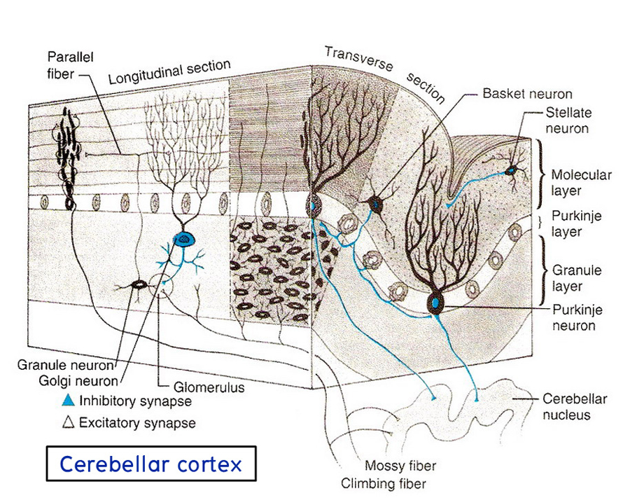
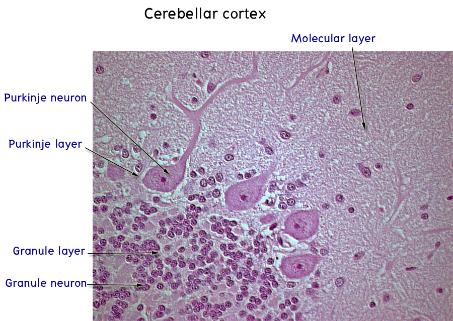
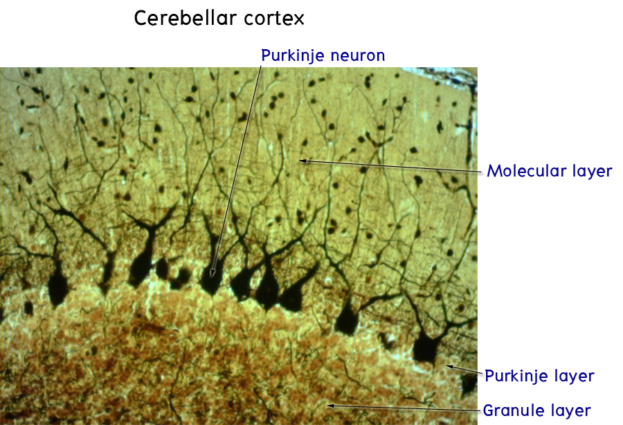

Histology of the cerebellar cortex
Cerebellar cortex ให้ชี้แสดงชั้นต่าง ๆ ของ cerebellar cortex ซึ่งแยกออกได้เป็น 3ชั้นดังนี้

- Molecular layer อยู่ superficial ที่สุด
- Purkinje cell layer ซึ่งประกอบด้วย neurons รูปร่างพิเศษที่เรียงตัวเป็นแถวเดียว
- Granular layer อยู่ลึกที่สุด ประกอบด้วย granule cellsจำนวนมาก

